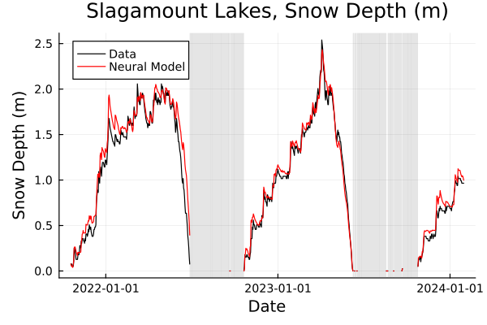

Seasonal Snow Timeseries Generation with a Neural Network
This tutorial explains how to make use of the code developed for forecasting seasonal snow depth evolution, using a neural network with structurally-enforced constraints. The following steps through a basic use-case of the system on an already-cleaned dataset, though exploration of optional keyword arguments in the developed code and additional tools for scraping data (explained in the data tutorial) provide for a richer set of functionality.
The updates of the neural snow model follow the equation
$\frac{dz}{dt} = \mathcal{M}\left(z, SWE, φ, R, v, T_{air}, P_{snow}\right),$
where
$t$ is the time (s),
$z$ is the snow depth (m),
$\mathcal{M}$ is the neural network,
$SWE$ is the Snow Water Equivalent, or the height of water if all the snow melted (m),
$φ$ is the relative humidity (0-1),
$R$ is the solar radiation (W/m²).
$v$ is the wind speed (W/m²).
$T_{air}$ is the air temperature (degrees C).
$P_{snow}$ is the water equivalent rate of snow precipitation (m/s).
The model is a 1D model to permit utilization over any desired grid resolution and shape.
We will use the forcings and snow depth data as a validation of the model, so the initial conditions will be the initial value provided in the existing data.
We begin by importing the developed code to create and run the neural network, as well as some preliminary packages:
using ClimaLand
using DataFrames, CSV, HTTP, Dates, Flux, StatsBase, cuDNN┌ Warning: Package cuDNN not found in current path.
│ - Run `import Pkg; Pkg.add("cuDNN")` to install the cuDNN package, then restart julia.
│ - If cuDNN is not installed, some Flux functionalities will not be available when running on the GPU.
└ @ FluxCUDAExt ~/.julia/packages/Flux/MtsAN/ext/FluxCUDAExt/FluxCUDAExt.jl:57
The code lives in an extenson that we have to manually load. The extension can be loaded only if "CSV", "HTTP", "Flux", "StatsBase", "cuDNN" and "ClimaLand" are loaded.
DataTools = Base.get_extension(ClimaLand, :NeuralSnowExt).DataTools
ModelTools = Base.get_extension(ClimaLand, :NeuralSnowExt).ModelTools;and also, for this tutorial, some purpose-made functions for displaying the output. A similar analysis_tools.jl file exists alongside display_tools.jl for some basic functions for analyzing/scoring the model, if desired.
using ClimaLand
code_dir = joinpath(pkgdir(ClimaLand), "docs/tutorials/standalone/Snow")
include(joinpath(code_dir, "display_tools.jl"));Next, we set up values of the network hyperparameters, including the number of epochs to train it, as well as the width parameter $n$ as outlined in the associated parameter, and the two loss function hyperparameters $n_1$, $n_2$.
n = 4
n1 = 2
n2 = 4;We next outline which variables in the dataset will be used as predictors, calling them by their column name as a Symbol. The number and choice of these can be changed to reflect any dataset. Another column is specified as the target variable, in this case, the $\frac{dz}{dt}$ column.
pred_vars = [
:z,
:SWE,
:rel_hum_avg,
:sol_rad_avg,
:wind_speed_avg,
:air_temp_avg,
:dprecipdt_snow,
]
target = :dzdt;Specifying the indices of the depth and precipitation variables (used in the constraints) and the total number of input features will be necessary when creating the model, so we will specify them here as well.
nfeatures = length(pred_vars)
z_idx = 1
p_idx = 7;We next read in the already-cleaned training dataset, though for custom datasets there is plenty of functionality provided in the DataTools module to scrape SNOTEL data directly. We also set the unit timestep seen in this data (daily, so 1 day) to be used for setting the network's constraints as well as generating timeseries during usage. To see the code that generated this data file, check out the data tutorial. We also specify the maximum gap size in the data (in units of Δt) that the network can traverse before requiring a reset, via hole_thresh.
training_data_download_link = "https://caltech.box.com/shared/static/1gfyh71c44ljzb9xbnza3lbzj6p9723x.csv"
testing_data_download_link = "https://caltech.box.com/shared/static/qb2ze1wcc1a37fgt5k9wsj27gpoh39ax.csv"
data_train = CSV.read(HTTP.get(training_data_download_link).body, DataFrame)
valdata = CSV.read(HTTP.get(testing_data_download_link).body, DataFrame)
Δt = Second(86400)
hole_thresh = 5;With this, we can begin the actual usage pipeline. First, we split the precipitation feature into rain and snow constituents, and apply a set of filters before extracting the necessary features with prep_data (the split already exists in the testing data):
usedata = DataTools.prep_data(data_train);After this, we determine scalings for the input and target data that are conducive to beneficial weight updates. In this case, the target data during training will be scaled in the -1 to 1 range, and the neural network will scale input features according to their standard deviations (no shifting is carried out in this case, so that the physical meaning of "0" is preserved). This data is then converted into matrix form for ease of its conversion into a Flux DataLoader object, later, during training.
out_scale = maximum(abs.(usedata[!, target]))
in_scales = std.(eachcol(select(usedata, pred_vars)))
x_train, y_train = DataTools.make_data(usedata, pred_vars, target, out_scale);We then create the model itself given the hyperparameters specified above, and indicate which features are to be used to determine the boundary constraints on the network, and return the trainable weights for the overall model.
model = ModelTools.make_model(nfeatures, n, z_idx, p_idx, in_scale = in_scales)
ps = ModelTools.get_model_ps(model);As training updates are better with the scaled data, we have to modify the timescale and output scaling of the model structure prior to training. This step is undone/reset after training is over.
ModelTools.settimescale!(model, Dates.value(Δt) * out_scale)
ModelTools.setoutscale!(model, 1.0);With that, training is as simple as calling the trainmodel! function:
print("\nTraining model!\n")
ModelTools.trainmodel!(model, ps, x_train, y_train, n1, n2, verbose = true);
Training model!
Epoch: 10 | training loss: 0.003413366
Epoch: 20 | training loss: 0.0029593785
Epoch: 30 | training loss: 0.0026429435
Epoch: 40 | training loss: 0.0026199885
Epoch: 50 | training loss: 0.0026235317
Epoch: 60 | training loss: 0.002571668
Epoch: 70 | training loss: 0.0027369123
Epoch: 80 | training loss: 0.0026264174
Epoch: 90 | training loss: 0.0025852548
Epoch: 100 | training loss: 0.0025408245
To show the model's output on some of our training data in physically meaningful units, we first reset the timesacle and output scaling constants. From there, all we do is pass the dataframe for a given SNOTEL site and the trained model to the make_timeseries function, and we can compare the result to the actual data.
ModelTools.setoutscale!(model, out_scale)
ModelTools.settimescale!(model, Dates.value(Δt));For instance, let's show the results on SNOTEL site 1286 (Slagamount Lakes site, Montana):
Note that gaps in the data are shown as shaded regions on the plotted timeseries.
site_id = 1286
sitedata = usedata[usedata[!, :id] .== site_id, :]
true_series = sitedata[!, :z]
pred_series, _, _ =
ModelTools.make_timeseries(model, sitedata, Δt, hole_thresh = hole_thresh)
ptitle = "Slagamount Lakes, Snow Depth (m)"
siteplot(
ptitle,
sitedata[!, :date],
[true_series, pred_series],
["Data", "Neural Model"],
[:black, :red],
savename = "base_tutorial_plot1.png",
display_plot = false,
);
Or, alternatively, SNOTEL site 1070 (Anchorage Hillside, Alaska) from the testing data:
site_id = "1070" #string format for the testing ids is due to non-numerical testing site codes.
sitedata = valdata[valdata[!, :id] .== site_id, :]
true_series = sitedata[!, :z]
pred_series, _, _ =
ModelTools.make_timeseries(model, sitedata, Δt, hole_thresh = hole_thresh)
ptitle = "Anchorage Hillside, Snow Depth (m)"
siteplot(
ptitle,
sitedata[!, :date],
[true_series, pred_series],
["Data", "Neural Model"],
[:black, :red],
savename = "base_tutorial_plot2.png",
display_plot = false,
);Additional functionality can be explored through the optional arguments to the developed functions, though creating timeseries for any validation dataset can be handled with a similar call to make_timeseries. The timestep Δt (as well as a matching call to the network with settimescale!) can also be changed to different values to evaluate the network's capability on validation data with different temporal resolutions, without the need for retraining.
This page was generated using Literate.jl.